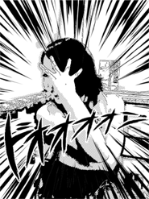

Saori Tanakaの制作一覧を掲載しております。

sample sample1
sample sample2
sample sample3

Profile
Saori Tanaka
大阪生まれ、大阪育ち
エステティシャン、エステメーカー営業を経て、現在、日本全国を飛び回るブライダルプランナーをしております。
全く異業種の私がなぜこのブートキャンプに参加したかと言いますと……
昨年、所属会社のHP、カタログ、チラシ等制作するにあたり、社内で唯一PCに明るかったばかりに制作担当者にめでたく就任。
（といっても、タイピングがそこそこ早くて、iPhoneを使っていて、フリック入力ができるからという人選）
web制作の知識は１０年近く前の高校時代の授業のみ。
よって、
「div……とは……？」
「ヘッダー……ナビ……？ margin:0 auto;？＜ｃｅｎｔｅｒ＞でくくればいいのでは……？あれ、だめ？」
というレベルからなんとか２週間でWordPressのオリジナルテーマにてHPを作成。
当時はただただ大変！だったweb制作が、だんだんと楽しくなってきて、
「これは私の新しいスキル（武器）になるかも！ このスキルを磨いて海外で働きたい！」
と一念発起。
素人ながら、好奇心と行動力だけを両手にブートキャンプへ参加し、スキルを磨く日々です。


noirdog22@gmail.com
お問い合わせは、メールで直接ご相談ください。
５日以内に返信の無い場合にはお手数ですが、再度お問い合わせ下さい。
- ご氏名
- メールアドレス
- お問い合わせもしくはご相談内容
５日以内に返信の無い場合にはお手数ですが、再度お問い合わせ下さい。